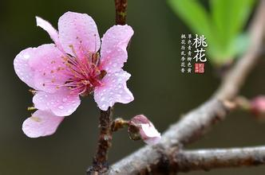

你悄悄地走来，默默无声，一眨眼，大地披上了金色衣裳。
你悄悄走来，走进田间，麦子香味四飘，那亩亩庄稼，远看好似翻滚的千层波浪；近看，麦子，笑弯了腰，高梁涨红了脸、玉米乐开了怀，地里的人忙及了，"唱一曲呀收获的歌，收了麦子，收高梁啊，收了玉米，收大豆啊，收获完了送国家啊。"悠洋的歌声道出了农家秋收的喜悦。
你悄悄的走来，带来一件黄衣裳，一见红衣裳，瞧着边的山，像是渡上了一层金色。飘飘悠悠从上面飞下无数黄蝴蝶，一伙在半空中盘旋，不知过了多长时间深黄的衣裳变成了浅黄；浅黄又变成了赫石，你看，它多像一个顽皮的小鬼，瞧那边的山上，高梁如醉，简直是一片红海，遮盖了半个天际，和霞光连在一起，红的像火焰似的燃烧。这一黄一红的连成一片，给人一种说不出的温暖，甚至都忘了在过几天，寒冬就要来临了。
你悄悄的走来，带来了美丽的秋光美景，带来了丰硕的果实，听，锣鼓喧天，好热闹，忙了一年的人们脸上露出了内心压仰不住的喜悦："又迎来了一个丰收年。"我迷恋着秋！秋--绚丽多彩的时节，果实收获的时节，欣欣向荣的时节。